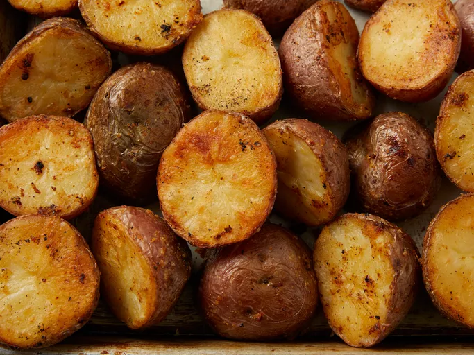

Oven Roasted Parmesan Potatoes

These Parmesan-roasted potatoes are crispy on the outside and soft and creamy on the inside. I have tried a lot of good roasted potato recipes, but I keep coming back to this one.
Ingredients
- cooking spray
- 1 teaspoon vegetable oil, or as needed
- 2 tablespoons freshly grated Parmesan cheese
- teaspoon salt
- teaspoon garlic powder
- teaspoon paprika
- teaspoon ground black pepper
- pounds red potatoes, halved
Steps
- Preheat the oven to 400 degrees F (200 degrees C). Spray a 9x13-inch baking pan or cast iron skillet with cooking spray; pour in about 1 teaspoon vegetable oil to coat the bottom.
- Mix Parmesan, salt, garlic powder, paprika, and pepper together in a bowl.
- Blot dry the cut-side of potatoes with a paper towel to remove any moisture.
- Place potatoes in a bowl and drizzle with 1 tablespoon vegetable oil; toss until potatoes are lightly coated. Sprinkle potatoes with Parmesan mixture; toss to coat.
- Arrange potatoes, cut-side down, on the prepared baking pan.